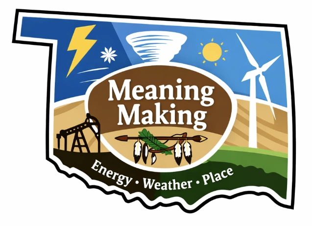
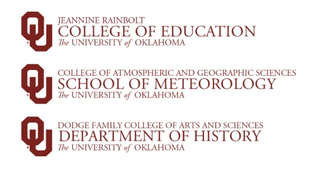
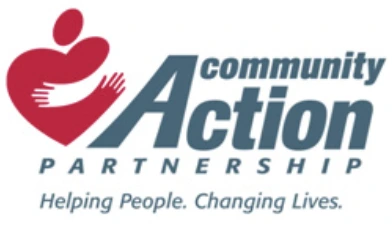
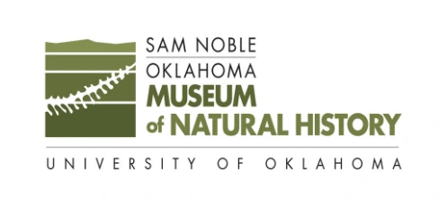
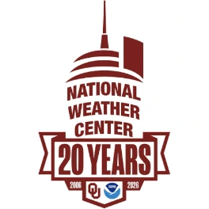

Featured project
Multimodal AI for understanding learning across place and time
Classroom quality measures capture a moment. Children learn across many. This longitudinal study follows young children from Head Start through Grade 1, at school, at home, and in museums, to build and validate MOSAIC, a human-centered measure of how learning opportunities unfold, recur, and reorganize. Oklahoma's weather, water, energy, natural history, and community change are the shared context children explore.
Eight waves across two transitions
Three settings, one analytic structure
About 45 minutes across three formats: large-group picture-book reading, small-group constructive play, and one-on-one place-based inquiry with the teacher.
Shared book reading and open-ended block play centered on children's everyday environments, so family knowledge and lived experience can surface naturally.
Parent–child exploration connected to the Sam Noble Museum of Natural History and the National Weather Center, around authentic objects, exhibits, and phenomena.
Across every setting, MOSAIC links a child's contribution to the social, material, or environmental response and to what the child does next.
Four cumulative aims
Define the observable events that make up a Situated Learning Opportunity, and organize them into initiation, contingent response, inquiry continuity, and participatory agency.
Recover those events from speech, pose, gesture, hand–object interaction, and spatial relations, with uncertainty-aware fusion that flags low-confidence moments.
Test whether MOSAIC adds child-specific information beyond established classroom measures, and how learning opportunities change across eight waves.
Find the lightest camera and sensor setup that keeps what matters, and make outputs interpretable for researchers, educators, and families.
Partners and interdisciplinary expertise




Mentoring and collaboration span early childhood education, computer science, meteorology, and history, with a Head Start research–practice partnership guiding feasibility, privacy, and interpretation.
Research questions
Aim 1. What observable child, educator, peer, material, and environmental events make up Situated Learning Opportunities from preschool through Grade 1, and which require contextual interpretation?
Aim 2. How accurately can speech, pose and orientation, gesture, hand–object interaction, and spatial relations recover human-coded events, and when does performance degrade under occlusion, floor play, rapid movement, or overlapping talk?
Aim 3. Does MOSAIC converge with established measures such as CLASS and inCLASS while adding information about children's language, literacy, reasoning, mathematics, inquiry, and social-emotional outcomes, and how do patterns change across the transitions to kindergarten and Grade 1?
Aim 4. How well does MOSAIC generalize to new children, classrooms, and settings, what is the minimum sensor setup needed, and can researchers and practitioners interpret its outputs, including uncertainty?
Intended use
MOSAIC is designed for low-stakes education research. It is not intended for diagnosis, teacher evaluation, or other high-stakes decisions. Human observation anchors every construct, and uncertainty is shown alongside every estimate.